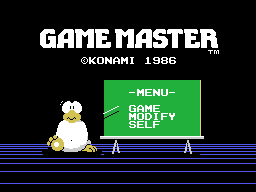
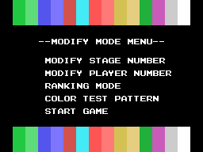
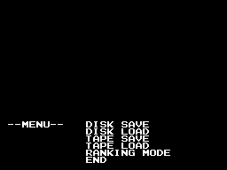
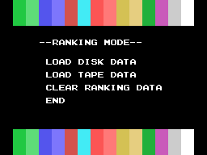

It is not a game.

The title screen, built from the ROM. Of the 16,384 bytes of VRAM, the only one that differs from the emulator is 0x39A9: the cursor blinking.
Konami's Game Master is a cheat cartridge. It goes in one slot and the game in the other, and from then on the Game Master lets you start on whichever stage you like, with as many lives as you like, freeze the game, save the screen to disk or tape and print it.
The interesting part is not what it does but that it can do it at all. The Game Master knows nothing about the game beside it until it boots.
The start-up menu, with the chalk pointer aiming at the chosen line. The three pointers are twelve tiles each — 0x4FA9, 0x4FB5 and 0x4FC1 — painted in the same spot on screen.

This is what you came for. MODIFY STAGE NUMBER and MODIFY PLAYER NUMBER ask for two numbers and store them at 0xD31A and 0xD31B. Those two addresses are what the twenty-one cheat routines read, one per game.
The cheat that works for all of them is three instructions, at 0x5D13:
ld a,(0D31Bh) ; the lives that were asked for
ld hl,(0D30Ah) ; and where the game keeps them
ld (hl),a0xD30A is a pointer to a variable belonging to the game, and it comes from its header. The rest of each routine is whatever that game needs in particular: how many stages it has, whether the counter has to wrap, whether the score has to be set too.
The Game Master does not go away when the game starts: it stays inside the game's interrupt, running fifty times a second. Three keys, read at 0x4F13 from rows 1, 6 and 7 of the keyboard:
0x4DF3).And the sign that it is frozen is not a caption on screen — that would ruin the game's own picture — but the CAPS light: 0x4E70 calls CHGCAP. Freezing also really silences the PSG: 0x4E85 saves the three channel volumes before zeroing them, and 0x4EF8 puts them back.

On a real machine, the top half of this screen is the game still running.
The disk and tape menus only clear 0x100 bytes from 0x3A00, that is the bottom eight rows. Everything else stays as it was, and beforehand 0x4275 has called the routine that carries the game's VRAM into RAM so it can be restored on the way out.

The cartridge saves four kinds of data — the screen, the game's data, the high score and the score table — to disk or tape, and you do not type the whole filename: it supplies the first letter according to the data (H, S, G or R, from 0x68DA), the extension is always VRM, and the game's catalogue number goes behind so two games do not overwrite each other's files.
The score table, freshly cleared, comes out with all six places under the house name: KONAMI (0x4A35).
And it can print. 0x7655 reads the VRAM point by point and turns it, because the printer prints vertically — eight dots per head stroke — and the screen runs horizontally. A dot is only printed if its ink differs from the background (0x7537): what reaches the paper is the shape, not the colour.